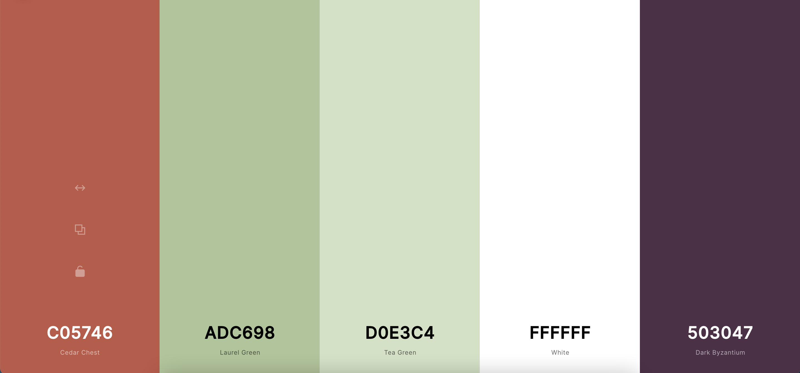
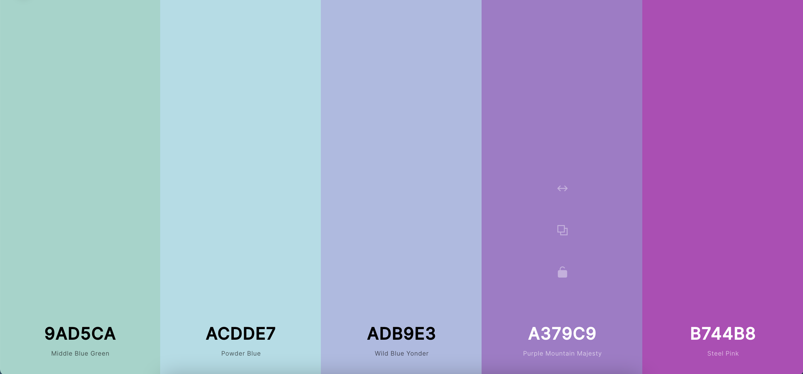
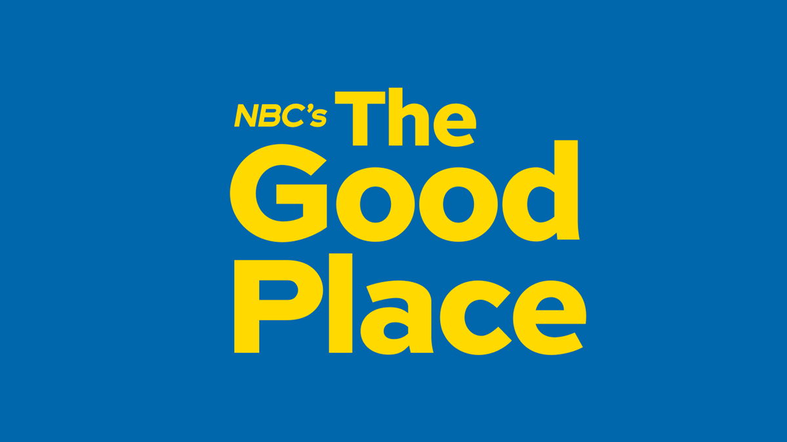
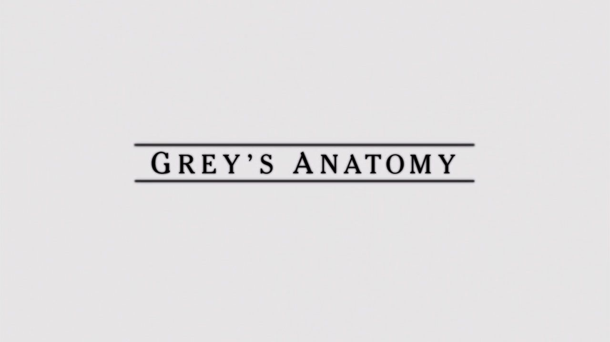
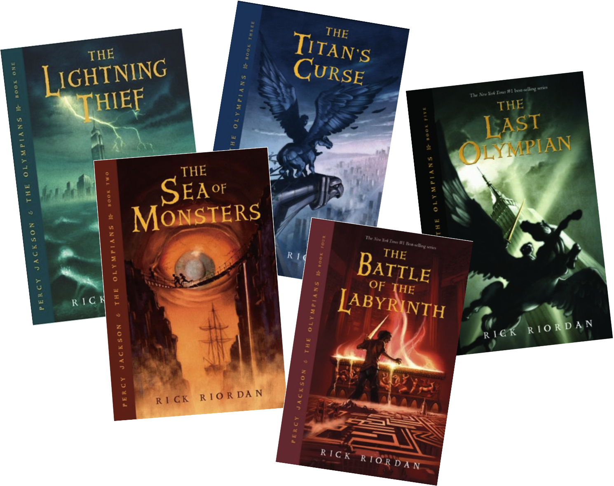

Favorite Color Palettes
-

I'm not usually a fan of green but this swatch caught my eye since the very first time I saw it!
-

I love pastel cool tones and I especially love the purples!
Favorite TV Shows
-

The Good Place is a show I re-watch all the time. The show's refreshing twist on the afterlife makes it an interesting watch I always comeback to!
-

Yes, I have watched all 17 seasons of this show! I'm at the point where I just need to know how it will end.
Favorite Books
-

The classic! I've always enjoyed the books and movies growing up. Any fellow Slytherins out there?
-

This book series is the reason for my obsession with Greek Mythology!
Favorite Movies
-

This is one of many Korean thrillers I love! The acting is brilliant and the plot is brilliant.
-

This is one of my all-time favorite movies. Not sure how likely the scenario is, but it is an enjoyable watch each time.
Favorite Candy Bars (so hard to narrow down to two!)
-

Probably the ultimate candy bar! I even have my cutom KitKat bar planned for when I get a chance to visit the facotry in Japan!
-

A classic and simply delicious!